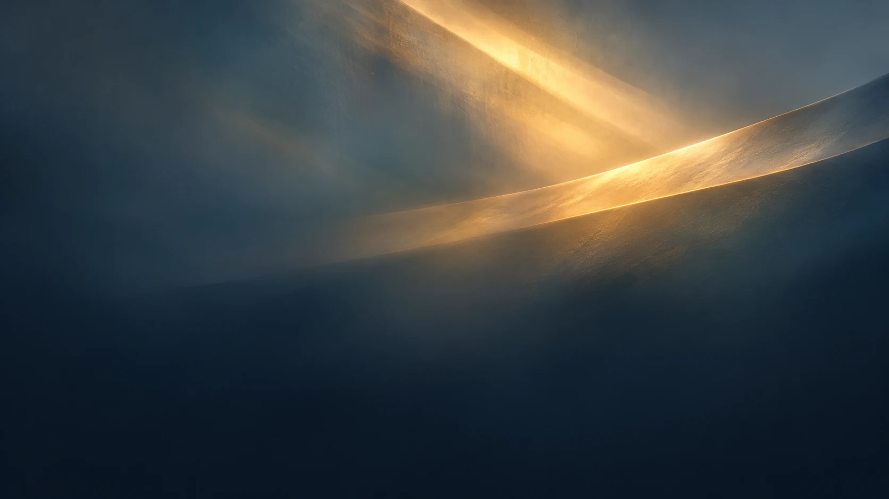
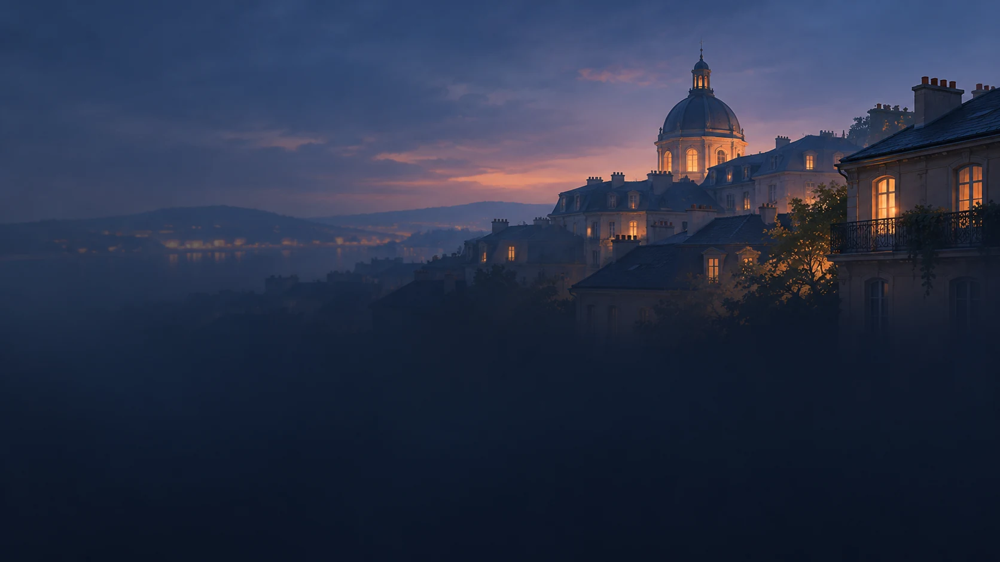
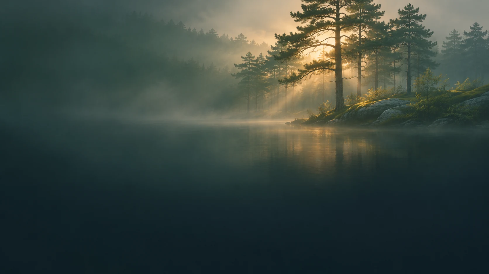
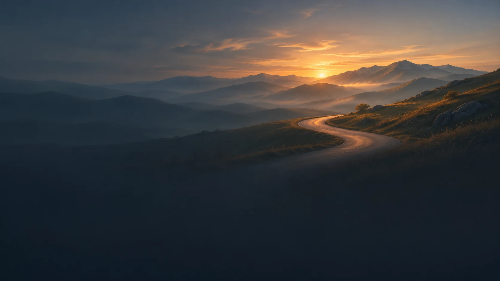
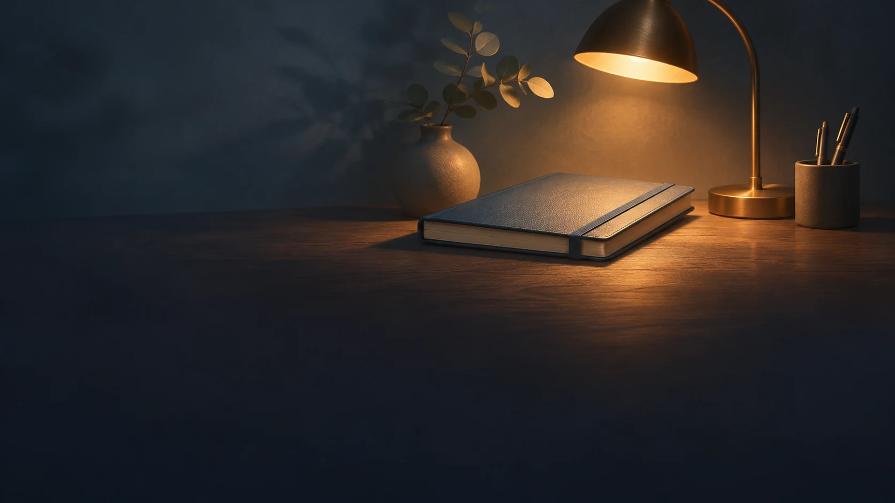
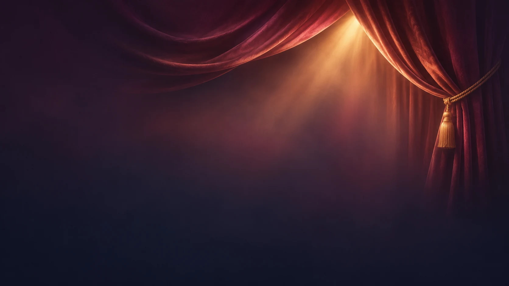
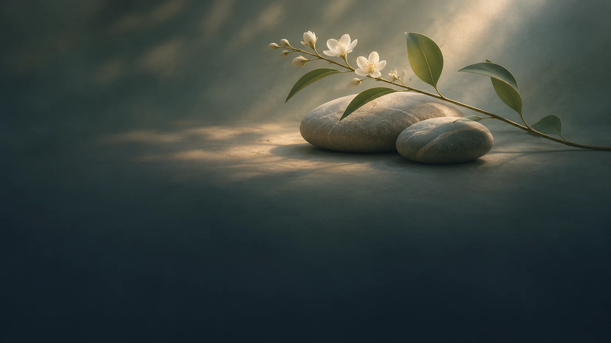
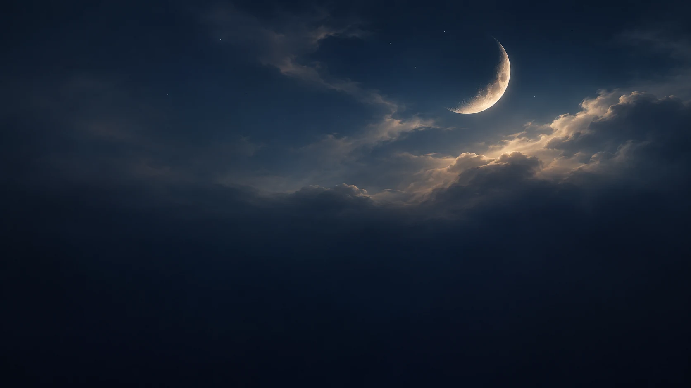

OKTI
Biblioteka teł wydarzeń
Dziesięć zatwierdzonych motywów. Dotknij grafiki, aby otworzyć ją w pełnym rozmiarze.








Dziesięć zatwierdzonych motywów. Dotknij grafiki, aby otworzyć ją w pełnym rozmiarze.







